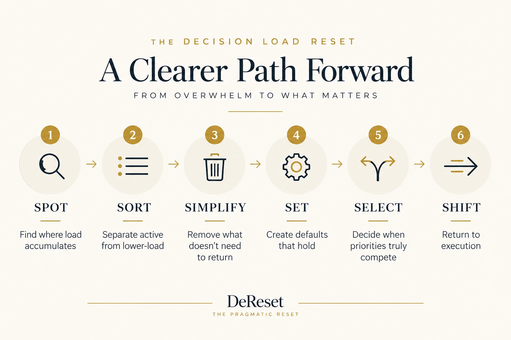
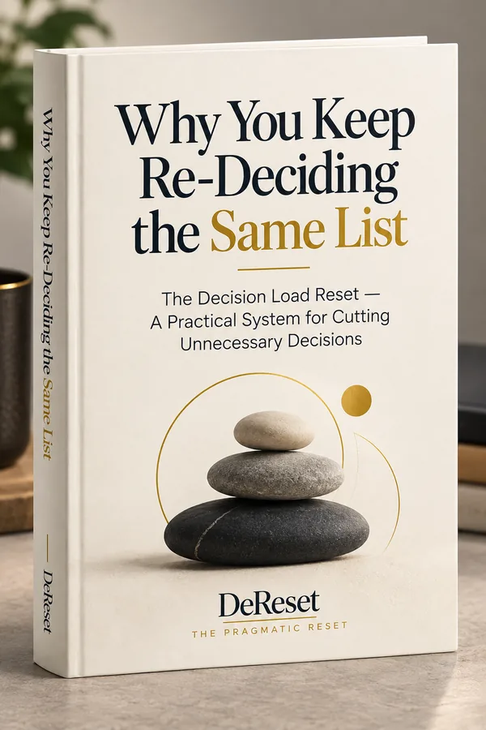
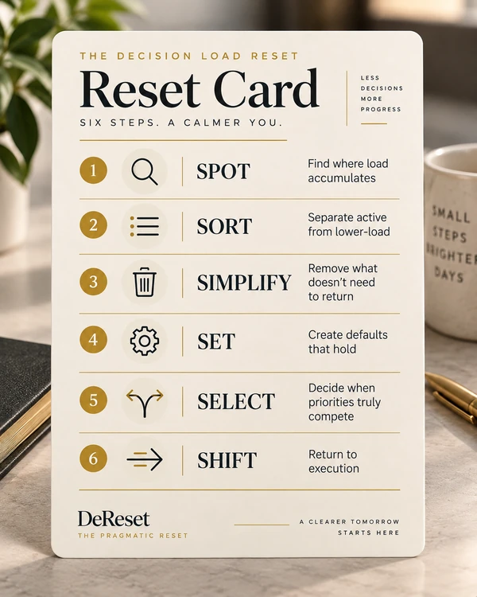
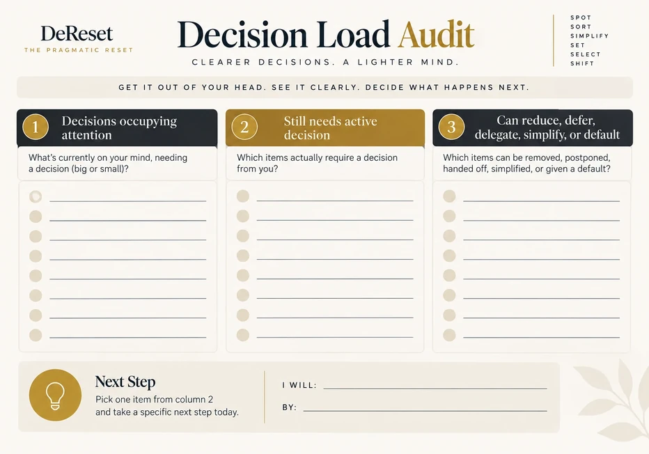
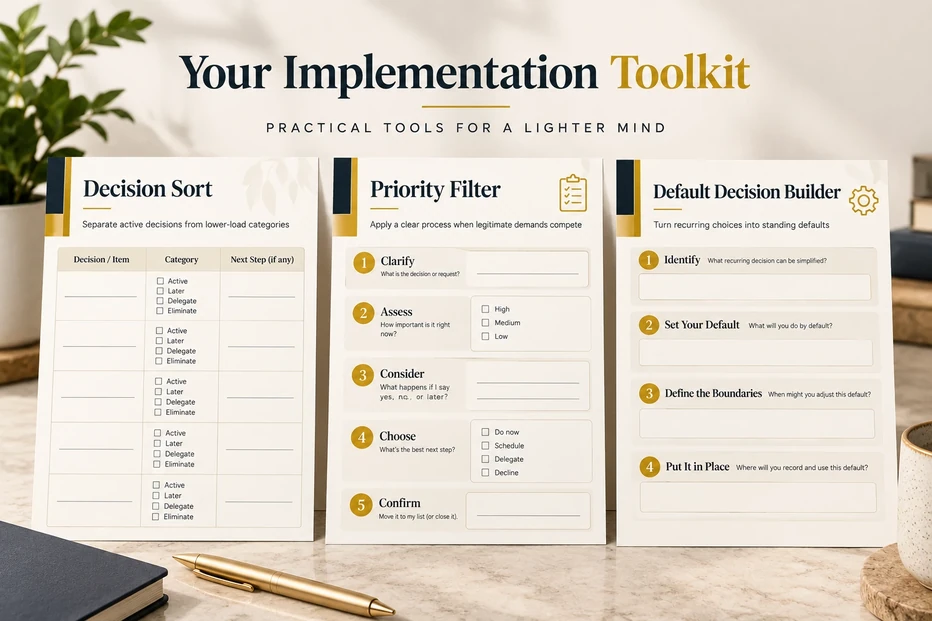
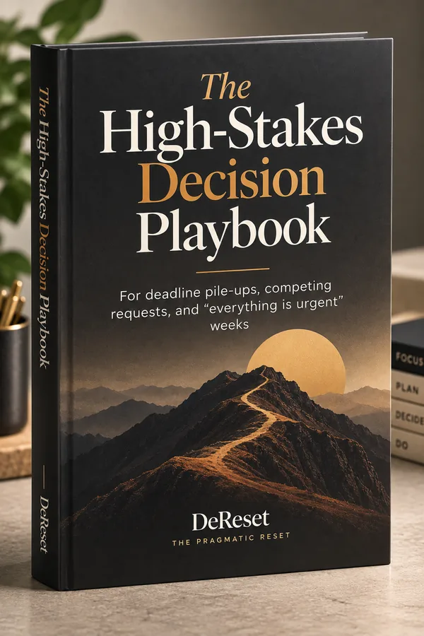
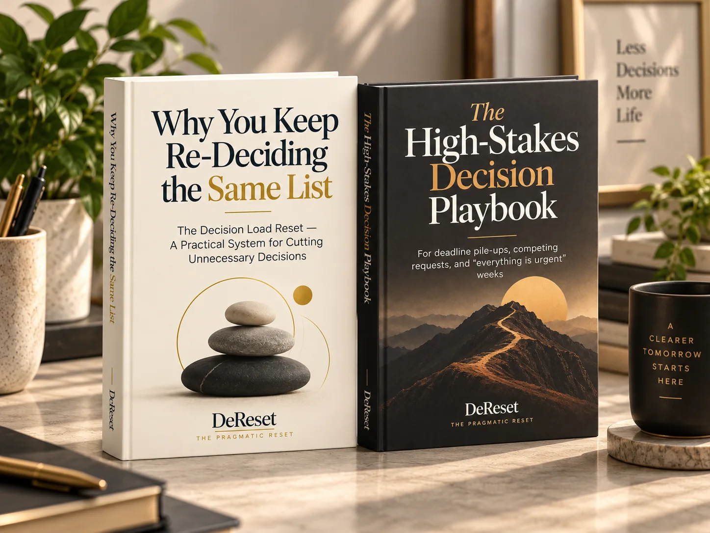

You open the list.
Every item on it marked important.
You scroll up. Scroll down. Re-rank. Second-guess. Pick one. Then wonder if it was the right one. By the time you actually start, the morning is already thinner and you're more tired than the work itself should make you.
It's not that you don't know how to work.
It's that choosing what deserves attention keeps eating the attention.
That's the quiet tax most productivity advice never names. The list doesn't get shorter because you got better at prioritizing. It stays heavy because you're still deciding the same kinds of things over and over.
You've probably tried the usual fixes.
Color-coded systems. Priority matrices. New apps that promise to surface "what matters most." Time-blocking that looks clean on Sunday and collapses by Tuesday. Focus techniques that help for a stretch and then quietly stop working.
Most of them assume the problem is execution or discipline or focus.
They rarely ask whether the real cost is the deciding itself.
So the cycle continues. Another framework. Another tool. Another week of feeling like you're managing the list instead of moving through it.
Here's the shift that changes the load:
Stop trying to get better at making every decision.
Start reducing the number of decisions that need to be made in the first place.
Some decisions genuinely require active judgment. Many others don't. They can be simplified, deferred, eliminated, delegated, or turned into a default that holds so you don't have to re-litigate them every morning.
When the unnecessary ones stop competing for attention, the important ones get clearer. And you get to spend more of your energy on the work instead of the choosing.
That is the Decision Load Reset.
Here's what that looks like on an ordinary morning. You open the list — same crowded collection you've been staring at all week. Instead of asking "What's most important?", you run it through Spot and Sort first: this one still needs a real decision, that one's been recurring for a month and can finally become a default, this other one was never actually yours to decide. In under a few minutes, the list you're actually choosing from is smaller — not because the work disappeared, but because most of it stopped needing a decision at all. What's left, you can Select and Shift into, with your head still clear.

This is a practical system, not another set of principles you have to keep feeding.
You get:




The sequence is straightforward: Spot → Sort → Simplify → Set → Select → Shift.
Identify where the load accumulates. Separate what still needs real attention. Reduce the rest. Install defaults where they belong. Apply a clear priority process only when it is actually needed. Then move back into execution.
No elaborate system to maintain. No new app. No daily ritual that collapses the moment life gets noisy.
I used to think I just sucked at time management.
So I did what you're supposed to do. Color-coded lists. Apps that yelled at me. Time-blocking. Priority matrices. All of it. Most of them worked for a week, maybe ten days. Long enough that I thought, okay, this time it's sticking. Then it wasn't.
The problem was never really time. It was the deciding.
I'd sit down in the morning with a reasonably clear head, open the list, and just stall. Twelve things, every one of them marked important. Each had a decent argument for why it should go first. I'd scroll up and down, re-rank, second-guess, and by the time I finally picked something the morning was already half gone and I felt worn out. The actual work wasn't the hard part. Choosing what deserved attention was.
There was this one Thursday — packed calendar, three different people calling things urgent, plus a deadline I actually gave a damn about — where I caught myself reading the same list for the fourth time. Not working. Just deciding. Again. I was coordinating operations for a small team then, and the weight of all those competing priorities felt heavier than doing any of the tasks.
That's when I quit asking "What's most important?" and started asking something smaller: "What gets my attention by default right now?"
I built one rule that made the next move obvious. No more re-litigating the whole list every morning. Just a default that held.
The load didn't disappear because I suddenly got more disciplined. It got lighter because I stopped deciding the same things over and over.
That's the method. Not another system you have to keep feeding. Just a practical way to cut the unnecessary decisions so you can get back to the work that actually matters.
This is for you if your days feel less like doing the work and more like repeatedly deciding which work you're supposed to be doing — if the list itself has started to feel like a second job.
It's a behavioral and productivity tool, built around cutting unnecessary decisions. It isn't a system for people who want more structure to manage; it's for people who want less of the deciding, so the doing can start sooner.
+ Decision Load Audit
+ Decision Sort
+ Priority Filter
+ Default Decision Builder
+ Reset Card

The High-Stakes Decision Playbook — a short companion that applies the same Spot → Sort → Simplify → Set → Select → Shift logic to the highest-pressure rooms: deadline pile-ups, competing stakeholder requests, "everything is urgent" weeks, and end-of-day overload.

Try the Decision Load Reset for 30 days.
If you use it and still feel stuck re-deciding the same list, email me at support@dereset.com within 30 days and I'll refund every cent.
No hoops.
No. The point is the opposite: reduce the number of decisions that require maintenance in the first place. The tools are designed to lighten the load, not add another layer you have to keep feeding.
Most of those help you rank more effectively. This one asks a prior question: which decisions even need to be ranked right now, and which ones can stop competing for attention altogether?
The method was shaped in an environment with competing priorities and real operational pressure. It does not assume a quiet calendar or perfect conditions. It assumes the list is already heavy.
No. The Decision Load Reset is a behavioral and productivity method — it doesn't diagnose, treat, or replace care for ADHD, anxiety, burnout, or any other condition. If decision fatigue is tangled up with something heavier than a crowded task list, a licensed professional is the right next step; this guide is for the everyday, ordinary version of too many things competing for your attention.
If the cost of deciding keeps outweighing the cost of doing, this is for you.
Get the Decision Load Reset and start cutting the unnecessary decisions — so today's list stops being the hardest part of today.
Get the Decision Load Reset (+ Bonus) — $27